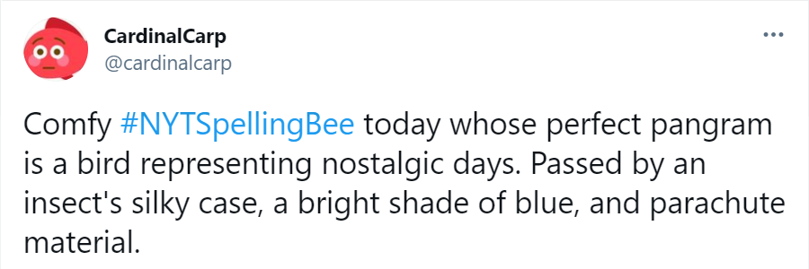
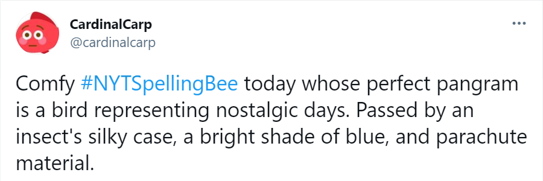

Now I Know My üêùüêùüêùs
Done with today's #NYTSpellingBee! The perfect pangram was a bit of a stretch (literally, ha). Also look out for an
adjective describing something pitifully sad, a type of tea, and a step on a ladder.
Pleasant #NYTSpellingBee solve today, aided by the past tense. As I [perfect pangram] through the puzzle, I found a sniper, a small cavity in a rock, and an adjective for something soft and sticky.
Nice #NYTSpellingBee today! Recognized the perfect pangram immediately from my time in track and field. Also found a prime number, my least favorite programming language, and my favorite ice cream flavor.
Whew, made it through today's tough #NYTSpellingBee! With so many intricate moving parts, it's perhaps best described by its perfect pangram... during the process I found a host, one who's been kicked out, and a large citrus fruit.
Friendly #NYTSpellingBee today with a familiar perfect pangram from math and science classes. Mostly common words, including a nice smell, a place for discussion, and a way to describe a place in the countryside.
Spooky #NYTSpellingBee with an equally spooky perfect pangram today! Some nice finds: an extinct creature, a familiar canal, and a cheerleader's tool.
Neat #NYTSpellingBee today, with an energetic and spirited perfect pangram! Look out for a particularly noisy insect, a skeptical and disillusioned person, and low points.
Comfy #NYTSpellingBee today whose perfect pangram is a bird representing nostalgic days. Passed by an insect's silky case, a bright shade of blue, and parachute material.
Finished today's #NYTSpellingBee! Immediately got the perfect pangram (who could forget those ancient wonders?) and came across some tricky words, like an adjective describing a leaky faucet, a pilot's distress call, and either a music file format or a kind of dress.
Pleasant #NYTSpellingBee solve today, aided by the past tense. As I [perfect pangram] through the puzzle, I found a sniper, a small cavity in a rock, and an adjective for something soft and sticky.
Nice #NYTSpellingBee today! Recognized the perfect pangram immediately from my time in track and field. Also found a prime number, my least favorite programming language, and my favorite ice cream flavor.
Whew, made it through today's tough #NYTSpellingBee! With so many intricate moving parts, it's perhaps best described by its perfect pangram... during the process I found a host, one who's been kicked out, and a large citrus fruit.
Friendly #NYTSpellingBee today with a familiar perfect pangram from math and science classes. Mostly common words, including a nice smell, a place for discussion, and a way to describe a place in the countryside.
Spooky #NYTSpellingBee with an equally spooky perfect pangram today! Some nice finds: an extinct creature, a familiar canal, and a cheerleader's tool.
Neat #NYTSpellingBee today, with an energetic and spirited perfect pangram! Look out for a particularly noisy insect, a skeptical and disillusioned person, and low points.
Comfy #NYTSpellingBee today whose perfect pangram is a bird representing nostalgic days. Passed by an insect's silky case, a bright shade of blue, and parachute material.
Finished today's #NYTSpellingBee! Immediately got the perfect pangram (who could forget those ancient wonders?) and came across some tricky words, like an adjective describing a leaky faucet, a pilot's distress call, and either a music file format or a kind of dress.
 
